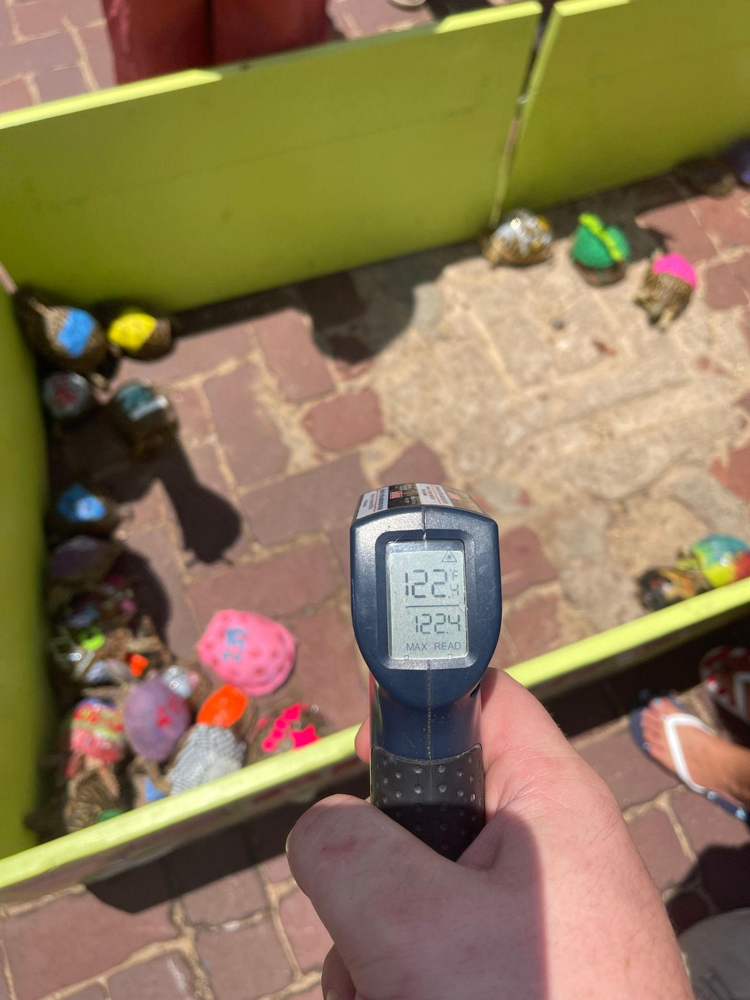

One of the major causes of abuse or death to turtles at some turtle races is exposure to high temperatures. In the wild, box turtles avoid overheating by burying or soaking in shallow pools. The ability to soak when needed is essential to good turtle health.
When turtles are picked up for races, they may be kept in boxes and buckets with little concern for their health. These turtles need to be protected from high temperatures and allowed to soak while being kept. On race days, turtles arrive in a variety of containers and some are left sitting out in the hot sun.
Organizers often pick a concrete or asphalt surface for the turtle race and proceed to race turtles during the hottest part of the day. Then, after the races are over, turtles are sometimes left sitting in their containers in the sun, locked in closed vehicles all day or thrown into the back of pickup truck beds.
At one race, organizers made a truck bed available for people to dump unwanted turtles in and the turtles were observed scrambling for the only sliver of shade and exhibited overheating responses in the sweltering environment.
In 1998, the late, Sarah Reeb, a concerned citizen whose work on turtle races in Kansas helped inspire the current project, pegged her local turtle race at 130 degrees Fahrenheit. She suggested reforms to the race organizers – including prohibiting people from painting turtle shells and moving the race to a cooler time of day – and was rebuffed by organizers. “What you don’t see is how many of them are cooking in the sun, how many are starving,” she told a reporter from the Topeka Capital-Journal, “and how many have died.”